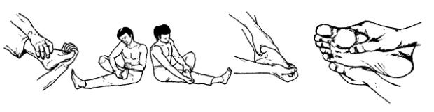

Змея кусает себя за хвост

Исходное положение: Садимся на пол, левая нога вытянута вперед, правая согнута в колене и лежит ступней на левом бедре. Левой рукой захватываем со стороны подошвы пальцы правой ноги, правой рукой обхватываем щиколотку правой ноги так, чтобы большой палец руки лежал с внутренней стороны, а четыре других пальца прижимали с внешней стороны область наружной лодыжки.
Левой рукой вращаем стопу против часовой стрелки в голеностопном суставе, причем одновременно разминаем пальцы ноги, описывая ими малый круг. Затем повторяем это в другую сторону. Корпус держим прямо, дышим спокойно, естественно. Сменив положение ног, приступаем к вращению левой стопы. При этом следим за тем, чтобы большой палец левой руки был прижат к внутренней лодыжке.
После вращения стопы большим пальцем правой руки массируем точку иглотерапии юн-цюань, расположенную в средней части стопы, на расстоянии 2/5 от носка до пятки на внутренней стороне стопы.
Next up: Кольцо змеи